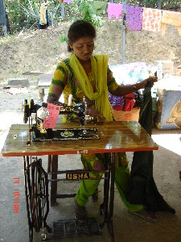

N - n
n- न- CLT क्लिटिक. clitic, third plural pre-adverbial; तृतीय बहुवचन क्लिटिक. ɖunio n-ɑmbikʰir cɔkbi-bi ji-k-ɔ डूनीओ नामबीखीर चौक्बीबी जीकौ. They ate a turtle yesterday morning. उन्होंने कल सुबह कछुआ खाया था।. SD: grammar, व्याकरण.
-n -न VAR: -nu -नू. SUF प्र. third person plural suffix (human); तृतीय बहुवचन प्रत्यय (मनुष्यों के लिए प्रयुक्त). tʰire-nu-er benobe थीरेनूएर बेनोबे. The children are sleeping. बच्चे सो रहे हैं।. SD: grammar, व्याकरण.
nɑːkki नाऽक्की V क्रि. begin; शुरू करना.
nɑmboco नाम्बोचो MORPH: nɑm-boco. COMITATIVE सं वा. together; along with; साथ में; साथ-साथ. nɑm boco-tʰire-bi nyo-konɑi नाम बोचो थीरे बी न्यो कोनाई. All the children went home together. सब बच्चे साथ-साथ घर गए।. SD: relationship, सम्बंध.
nɑmboro नामबोरो VAR: ŋɑmboro ङामबोरो; nɑŋelɑ-ŋoli नाङेलाङोली. PRN सर्व. second person dual (honorific); आप दोनों. SD: pronominal, सर्वनाम.
nɑmu नामू VAR: nɑːmu नाऽमू. N सं. wart; mole; मस्सा; तिल. SD: attribute, विशेषता. SEE: erlɔ ‘mole’ ‘तिल एरलौ ’.
nɑŋe नाङे PRN सर्व. second person (honorific); आप. SD: pronominal, सर्वनाम.
nɑɲe नाञे PRN सर्व. you (hon.); आप. SD: pronominal, सर्वनाम.
nɑrɑkɑmu नाराकामू Q परि. many; कई; अनेक. SD: quantifier, परिमाण वाचक.
nɑrɑɲ नाराञ V क्रि. gather; जमा करना.
nɑrɑʈokɑ नाराटोका MORPH: nɑrɑ-ʈokɑ. N सं. thief; चोर. nɑrɑ-ʈokɑ bʰɑskɔret ɲyobi tɑbie नाराटोका भास्कौरेत ञ्योबी ताबीए. The thief burnt up Bhaskar’s house. चोर ने भास्कर का घर जला दिया।. SD: people, लोग.
nɑtɑširsi नाताशीरसी MORPH: nɑ-tɑ-širsi. N सं. wrestling (your); कुश्ती (तुम्हारी). SD: activity & event, कार्यकलाप.
neboitotbuliɑ नेबोईतोतबूलीआ MORPH: neboit-ot-buliɑ. N सं. song sung at the time of marriage; शादी के समय गाया जाने वाला गाना. SD: ritual, रीति-रिवाज़.
nekelebɑy नेकेलेबाय Etym: Bo; बो. V क्रि. stay on/ stay back; ठहरना.
nencuo नेन्चूओ MORPH: nen-cuo. ADJ वि. my own; self; अपना. SD: pronominal, सर्वनाम.
nenoi नेनोई N सं. swelling (because of sting); किसी के काटने से आई सूजन. SD: state, अवस्था.
nɛkʰuropʰo ऐखूरोफो MORPH: ɛ-kʰuro-pʰo. N सं. lazy woman; सुस्त औरत. SD: attribute, विशेषता.
nɛlerɛm नैलेरैम COMITATIVE सं वा. together; साथ में. SD: relationship, सम्बंध.
nɛmbošu नैम्बोशू MORPH: nɛm-bošu. V क्रि. fight with each other; आपस में लड़ाई करना.
nɛncɑlo नैनचालो DEIXIS डीक्सीस. nearby (men); आस-पास (आदमी). SD: space, अन्तरिक्ष.Environmental
nɛncɑrɑ नैनचारा DEIXIS डीक्सीस. nearby (ladies); आस-पास (महिलाएं). SD: space, अन्तरिक्ष.Environmental
nilɛ नीलै PRN सर्व. they; third plural; वे. SD: pronominal, सर्वनाम.
niliso नीलीसो PRN सर्व. your (plural); तुम लोगों का. SD: pronominal, सर्वनाम.
niliyoːwbe नीलीयोऽबे PRN सर्व. they (hon.); वे (आदरसूचक). SD: pronominal, सर्वनाम.
nimok नीमोक Etym: Hindi; हिन्दी. N सं. salt; नमक. nimok-pʰobe नीमोकफोबे. There is no salt. (इसमें) नमक नहीं है।. SD: edible item, खाद्य सामग्री.Environmental
nimokpʰobe नीमोकफोबे MORPH: nimok-pʰo-be. Etym: Hindi; हिन्दी. ADJ वि. saltless; बेनमक. SD: attribute, विशेषता.
 ninoi नीनोई V क्रि. grow; बढ़ना.
ninoi नीनोई V क्रि. grow; बढ़ना.
ninu नीनू ADV क्रि वि. fiercely; तीव्र; प्रबल; ज़ोर से. o ʈʰɛ-tɛr ninu coic ओ ठै तैर नीनू चोईच. He embraced me fiercely. उसने मुझे ज़ोर से गले लगाया।. SD: manner, रीतिवाचक.
 |
 nipʰo नीफो VAR: ɲiɸo ञीफो. N सं. a small black mosquito; काला छोटा मच्छर. Diptera. SD: insect & invertebrate, कीट-पतंग एवं अरीढ़ जीव.Environmental
nipʰo नीफो VAR: ɲiɸo ञीफो. N सं. a small black mosquito; काला छोटा मच्छर. Diptera. SD: insect & invertebrate, कीट-पतंग एवं अरीढ़ जीव.Environmental
nirbeŋ नीरबेङ N सं. eyebrows, yours; तुम्हारी भंवें. SD: body part term, शारीरिक अंग शब्दावली.
niyoːwbe नीयोऽवबे PRN सर्व. they or their; वे या उनका. SD: pronominal, सर्वनाम.
no नो V क्रि. make; बनाना. no-rowɑ-ʈowo-k-om नोरोवाटोवोकोम. Make the boat. डोंगी बनाओ।.
nocɑrɑ नोचारा N सं. pestering by children; बच्चों की ज़िद. nocɑrɑ cɑmo नोचारा चामो. to keep something out of the reach of pestering children. बच्चों की ज़िद की वजह से किसी चीज़ को छुपा देना. SD: process, प्रक्रिया.
noe1 नोए V क्रि. hit; मारना. noe pʰom नोए फोम. Do not hit (him/her). (उसको) मत मारो।. SEE: noe2 ‘knit; stitch’ ‘सिलना नोएhm:{2}’.
 |
noe2 नोए V क्रि. knit; stitch; सिलना. SEE: noe1 ‘hit’ ‘मारना नोएhm:{1}’.
noeʈcɑlɔm नोएटचालौम V क्रि. collect; जमा करना.
noncopkʰɑ नोनचोपखा MORPH: non-copkʰɑ. N सं. police; पुलिस. SD: people, लोग.
nontocobo नोनतोचोबो MORPH: non-to-cobo. V क्रि. arrest; गिरफ़्तार करना.
noŋɑ नोङा MORPH: noŋ-ɑ. PRN सर्व. yours (honorific); आपका. SD: pronominal, सर्वनाम.
noɲɑɲɔrɔ नोञाञौरौ N सं. team or individual who has lost the game; हारी हुई टीम; हारा हुआ व्यक्ति. SD: sports, खेल-कूद.
notɑmo नोतामो N सं. marshes; दलदल. SD: natural environment, प्राकृतिक वातावरण.Environmental
notrošup नोत्रोशूप MORPH: notro-šup. ADJ वि. noisy, lit. sound is coming; शोर युक्त शाब्दिकः आवाज़ आ रही है. SD: attribute, विशेषता.
noʈʰi नोठी ADJ वि. uncontrollable; अनियंत्रित. noʈʰi ŋolo नोठी ङोलो. He cried uncontrollably. वह अनियंत्रित रोता रहा।. SD: attribute, विशेषता.
nɔ नौ N सं. a kind of wooden spear; एक प्रकार का लकड़ी का भाला. SD: tool, औज़ार, hunting & gathering, शिकार एवं संचय सम्बंधी.Environmental
 nɔbɔlɔ नौबौलौ VAR: nɔbɔlo नौबौलो; nɔbolo नौबोलो; nɔwbɑːlɔ नौवबाऽलौ. N सं. a lethal poisonous snake; प्राणघातक जहरीला सांप जो मनुष्य को मार भी सकता है. SD: reptile, रेंगने वाले जंतु.Environmental
nɔbɔlɔ नौबौलौ VAR: nɔbɔlo नौबौलो; nɔbolo नौबोलो; nɔwbɑːlɔ नौवबाऽलौ. N सं. a lethal poisonous snake; प्राणघातक जहरीला सांप जो मनुष्य को मार भी सकता है. SD: reptile, रेंगने वाले जंतु.Environmental
nɔe नौए V क्रि. sharpen to make a point; नुकीला बनाना.
nɔl नौल VAR: nol नोल. ADJ वि. correct; good; well; fine; fit; beautiful; सही; अच्छा; भला; ठीक; उपयुक्त; सुंदर. peje i col ko nɔl ʈot ciɔ be पेजे ई चोल को नौल टोत चीऔ बे. Peje has the best bow. पेजे का धनुष सबसे अच्छा है।. intɑ-ole-nɔl ईनताओलेनौल. good to look at, beautiful. देखने में सुंदर.  ɑɖese nɔl be आडेसे नौल बे. Des is a good boy. डेस अच्छा लड़का है।. SD: attribute, विशेषता.
ɑɖese nɔl be आडेसे नौल बे. Des is a good boy. डेस अच्छा लड़का है।. SD: attribute, विशेषता.  ɑtʰirenu tɑole nol आथीरेनू ताओले नोल. The child looks good. बच्चा अच्छा दिखता है।.
ɑtʰirenu tɑole nol आथीरेनू ताओले नोल. The child looks good. बच्चा अच्छा दिखता है।.
nɔle नौले ADV क्रि वि. properly; ठीक से. SD: manner, रीतिवाचक.
nɔljukʰi नौल्जूखी MORPH: nɔl-jukʰi. ADJ वि. good one; अच्छा वाला. SD: attribute, विशेषता.
nɔne नौने V क्रि. find/ catch, fish; मछली पकड़ना. u tɑjio bi-enɔne-cikom ऊ ताजीओ बीएनौने चीकोम. He goes for fishing. वह मछली पकड़ने जाता है।.
nɔŋettʰuw नौङेत्थूव MORPH: nɔŋ-ettʰuw. N सं. sister’s husband; बहन का पति; बहनोई; जीजा. SD: kin term, सम्बंधी वाचक शब्दावली.
nɔŋkɛnɑptubui नौङकैनापतूबूई MORPH: nɔŋ-kɛnɑp-tu-bui. N सं. pair of their fingers; उनकी दो उंगलियां. SD: body part term, शारीरिक अंग शब्दावली.
nɔrɔp नौरौप N सं. razor clam; उस्तरे के आकार की एक प्रकार की सीपी. SD: marine, समुद्री.Environmental
nu1 नू N सं. other man; दूसरा आदमी. SD: people, लोग. SEE: nu2 ‘retreating waves’ ‘हल्फ़ा की लौटती लहर नूhm:{2}’; nu3 ‘weave net’ ‘जाल बुनना नूhm:{3}’.
nu2 नू N सं. retreating waves; हल्फ़ा की लौटती लहर. SD: natural environment, प्राकृतिक वातावरण, marine, समुद्री. NT: Name of a woman. अण्डमानी लड़की का नाम।. SEE: nu1 ‘other man’ ‘दूसरा आदमी नूhm:{1}’; nu3 ‘weave net’ ‘जाल बुनना नूhm:{3}’.Environmental
nu3 नू VAR: no नो. V क्रि. weave net; जाल बुनना. SEE: nu1 ‘other man’ ‘दूसरा आदमी नूhm:{1}’; nu2 ‘retreating waves’ ‘हल्फ़ा की लौटती लहर नूhm:{2}’.
nuibelo नूईबेलो MORPH: nu-i-belo. V क्रि. widen; चौड़ा करना.
nukʰu नूखू MORPH: nu-kʰu. ADJ वि. straight; सीधा या सीधी.  ɲɔrtɔ nukʰu ञौरतौ नूखू. straight road. सीधी सड़क. SD: attribute, विशेषता.
ɲɔrtɔ nukʰu ञौरतौ नूखू. straight road. सीधी सड़क. SD: attribute, विशेषता.
nukʰutʰɑrɑ नूखूथारा V क्रि. straighten; erect; सीधा करना.
nulebɑbɑ नूलेबाबा MORPH: nule-bɑbɑ. N सं. forefathers; पूर्वज. SD: kin term, सम्बंधी वाचक शब्दावली.
nutʰirepʰo नूथीरेफो MORPH: nu-tʰire-pʰo. N सं. sterile woman; बांझ नारी. SD: people, लोग.
nutisse नूतीस्से N सं. bed; पलंग. SD: household, घरेलू.
nutluːrʈɔːy नूतलूऽरटौऽय ADJ वि. most; अधिकांश. SD: quantifier, परिमाण वाचक.
nuttise नूत्तीसे N सं. bedsheet; चादर. SD: household, घरेलू.
nuʈuttuːne नूटूत्तूऽने N सं. brother’s wife; भाभी, भाई की पत्नी. SD: kin term, सम्बंधी वाचक शब्दावली.
nyocop न्योचोप MORPH: nyo-cop. V क्रि. hut-making; झोंपड़ी बनाना. nyo-bi co-b-om न्यो बी चोबोम. I am building a house (hut). मैं घर (झोंपड़ी) बना रहा हूं।.